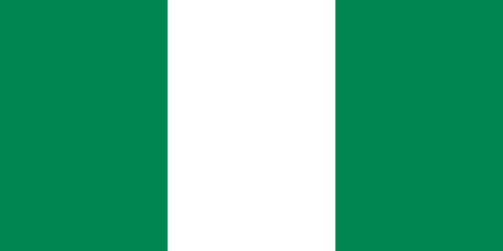

Nigeria es un pais ubicado en África el cual tiene el honor de ser el pais con mayor cantidad de habitantes en todo el continente.
A su vez, la diversidad cultural en el territorio es absoluta al descubrir que la mitad de la poblacion es religiosa y la otra mitad musulmana. No solo eso sino que es un pais con mas de 200 lenguas nativas las cuales se concentran principalmente en el medio del pais, en estados como Bauchi, Adamawa, Plateau, Kaduna y Taraba .
No obstante, pese a lo que se tiene pensado cuando te imaginas ciudades africanas, al ver la capital, Abuja, podemos observar que las ciudades son muy modernas y organizadas, haciendo que sea una de las mas lindas y avanzadas de toda África.

Nigeria, we hail thee,
Our own dear native land,
Though tribes and tongues may differ,
In brotherhood we stand,
Nigerians all, and proud to serve
Our sovereign Motherland.
Our flag shall be a symbol
That truth and justice reign,
In peace or battle honoured,
And this we count as gain,
To hand on to our children
A banner without stain.
O God of all creation,
Grant this our one request:
Help us to build a nation
Where no man is oppressed,
And so with peace and plenty
Nigeria shall be blessed.